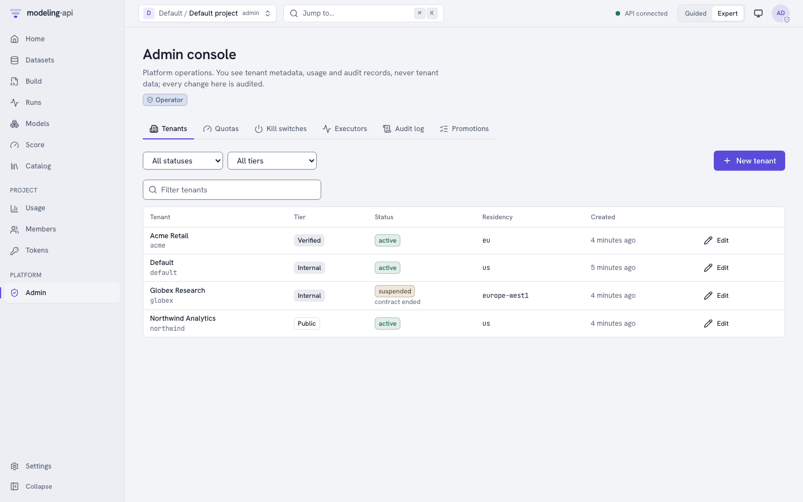
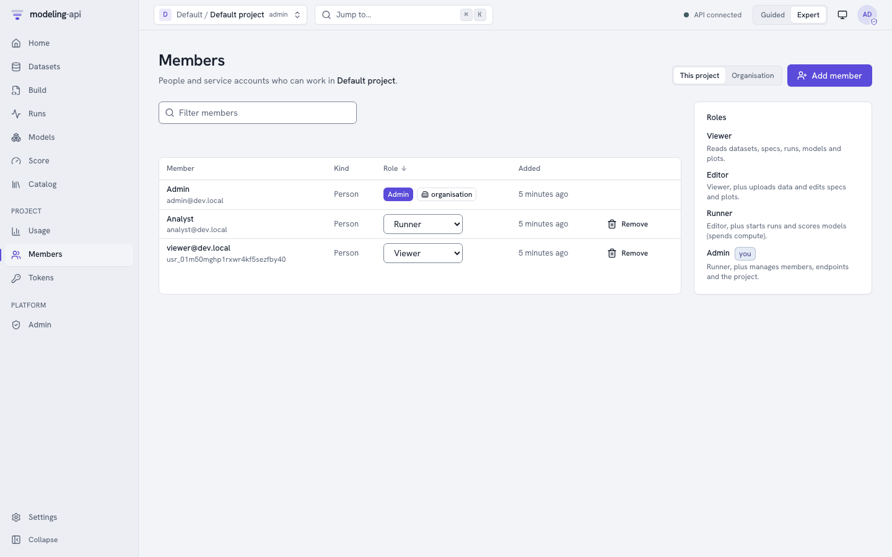
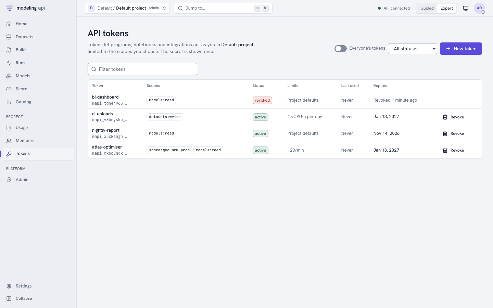
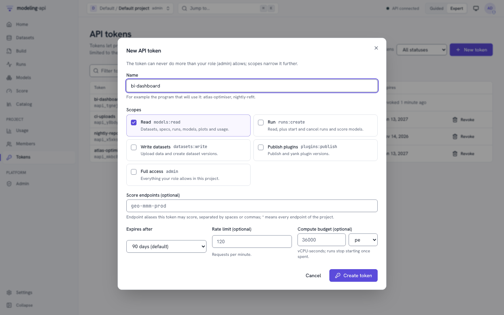
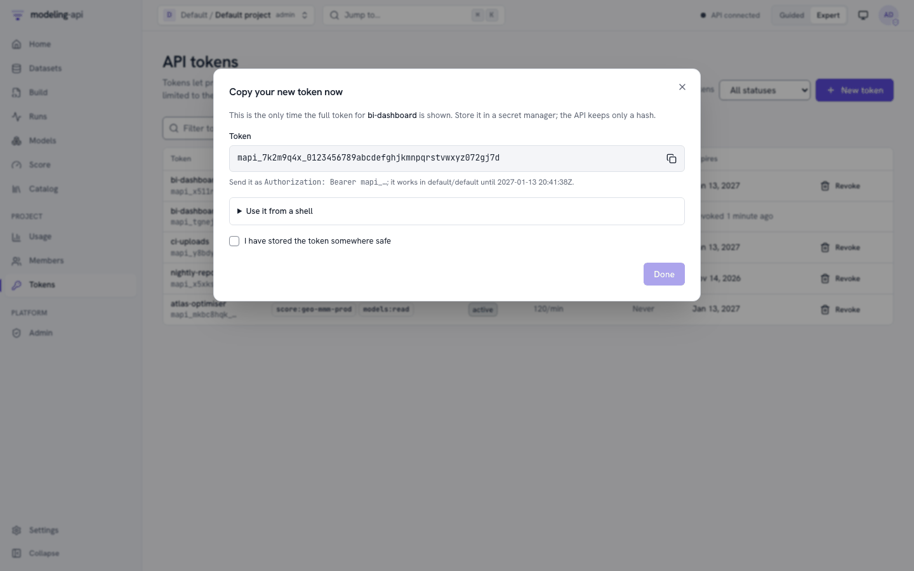
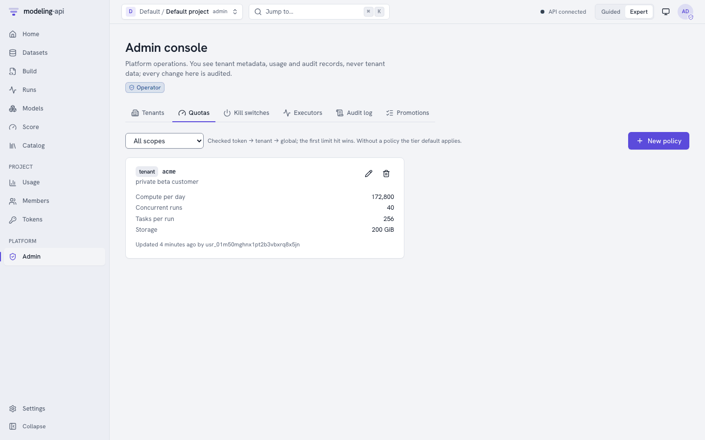
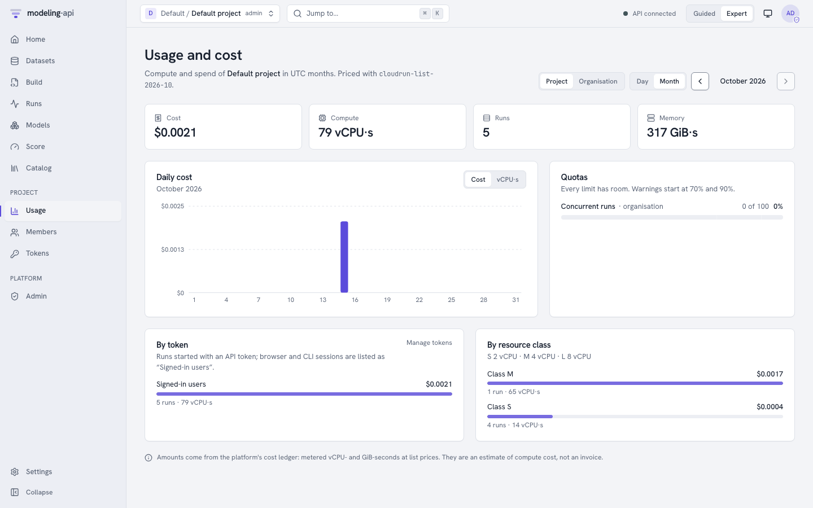
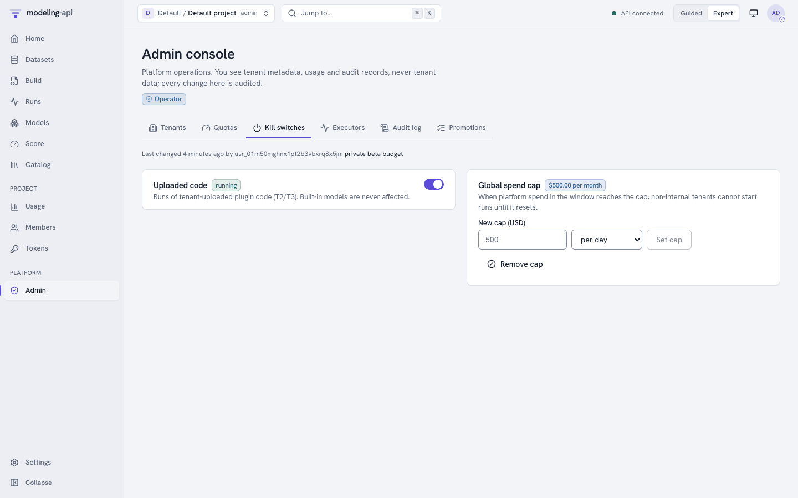
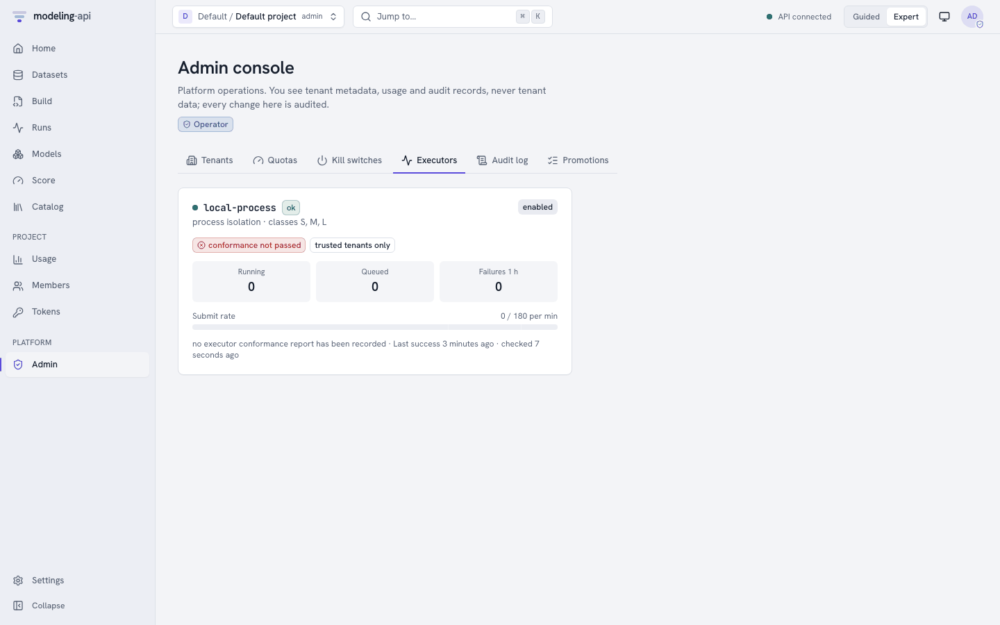
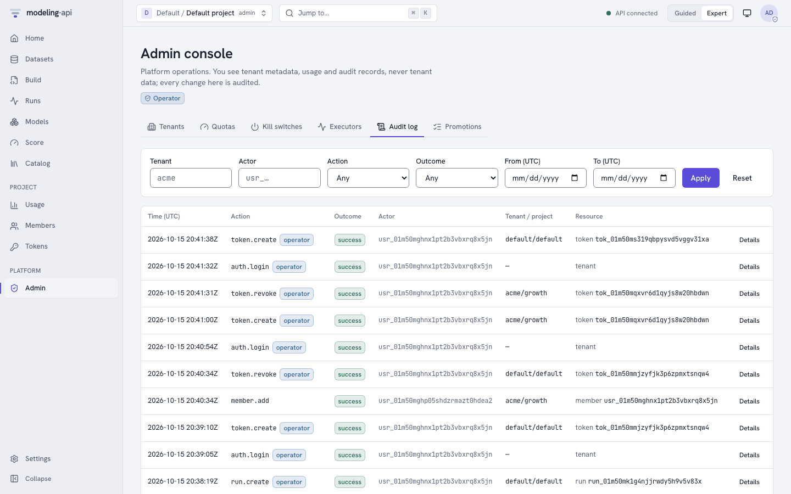

Administration v0.3¶
From v0.3, one deployment serves many organisations. This guide is for the persons who manage the deployment. It tells who can do what, and how the platform limits compute and charges for it. It also tells what to do when a problem occurs. For the concepts, see Tenancy and authentication and Quotas and cost. For sign-in, see Authentication.
There are three administrative jobs, and the platform keeps them separate:
| Who | Holds | Works in | Does |
|---|---|---|---|
| Platform operator | A verified e-mail in MAPI_OPERATOR_EMAILS, signed in |
Admin console, mapi admin …, /v1/admin/* |
Creates and suspends tenants. Sets trust tiers and quotas. Sets kill switches. Monitors executors. Reads all audit logs. Never reads tenant content (datasets, specs, models, plots). |
| Tenant admin | The admin role, tenant-wide |
Members, Usage (Organisation), /v1/tenants/{tenant}/… |
Creates projects. Adds and removes persons. Reads the bill and the audit log of the tenant. |
| Project admin | The admin role in one project |
Members, Tokens, Usage | Manages the members, endpoints, plugins and the tokens of all persons in that project. |
All examples on this page come from one walkthrough, docs/snippets/admin_tour.sh. The test
suite runs it against a development stack (make dev). The walkthrough signs in two times
through the development identity provider. It signs in as admin@dev.local (a platform
operator). It also signs in as analyst@dev.local, who becomes the admin of the new tenant.
API=${MAPI_URL:-${MAPI_API_URL:-http://127.0.0.1:8000}}
export MAPI_URL=$API
dev_login() { # dev profile only: an ID token for one seeded account, valid for an hour
python -c 'import sys; from mapi_client.oidc import dev_idp_login
print(dev_idp_login(sys.argv[1], sys.argv[2]))' "$API" "$1"
}
OPERATOR=$(dev_login admin@dev.local) # a platform operator
TENANT_ADMIN=$(dev_login analyst@dev.local) # becomes the new tenant's admin below
MAPI_TOKEN=$OPERATOR mapi whoami
On a real deployment, each person runs mapi login instead (see
Authentication). Operator commands always need a
sign-in. An API token never has operator powers, also when its owner is an operator.
Tenants¶
A tenant is an organisation. It is the boundary for bills, isolation and quotas.
PostgreSQL row-level security keeps the rows of each tenant separate. Each storage key starts
with t/{tenant}/. Only operators create tenants:
export MAPI_TOKEN=$OPERATOR
mapi admin tenants create "$TENANT" --name "Acme Retail" --tier verified \
--residency eu --admin-email analyst@dev.local --yes
mapi admin tenants ls
| Field | Values | Effect |
|---|---|---|
| id | A lowercase slug (acme) |
Part of each reference (dataset://growth/eu_media_daily is in a project of a tenant) and of each storage key. You cannot change it. |
| Trust tier | internal, verified, public, self-hosted-trusted |
Where the runs of the tenant can execute, and its default quotas (below) |
| Status | active, suspended, deleting |
suspended: persons can read and download. They cannot create, change or run anything. deleting: there is no access. |
| Data residency | eu, us, asia or one region (europe-west1) |
The platform puts runs only on executors in a region that matches. A change applies only to new runs. |
| Admin e-mail | Any address | The platform invites this person as tenant admin. The person claims the invitation at the first sign-in with that verified e-mail. |

The Admin console lists each tenant with its tier, status and residency. Only operators can use it. Other persons see an explanation. New tenant and Edit do the same as the commands above. To suspend or delete a tenant, you must give a reason and type the id of the tenant.
To stop an organisation in a reversible way, suspend it. Its persons keep read access to
their work. The platform refuses each change, upload and run with 403 FORBIDDEN. Operators
can still do actions on the tenant.
mapi admin tenants update "$TENANT" --status suspended --reason "contract ended" --yes
mapi admin tenants update "$TENANT" --status active --yes
Trust tiers¶
The tier controls where the code of a tenant can run. The dispatcher enforces this in
code. Tenant configuration never controls it. The dispatcher never submits a run to an
executor that does not have the isolation that the tier needs. It fails the run with
INFRA_ERROR and a detail that tells what is necessary. An example is verified tenants require an executor with
isolation >= gvisor and enforced egress/DNS. The tier also sets the default quotas of the
tenant, until an operator overrides them.
| Tier | Executor must provide | vCPU-s / day | vCPU-s / month | Concurrent runs | Fan-out tasks | Largest class | Storage | Egress / month | Requests / min |
|---|---|---|---|---|---|---|---|---|---|
internal |
isolation ≥ process | — | — | 100 | 1,000 | — | — | — | 6,000 |
self-hosted-trusted |
isolation ≥ process | — | — | — | — | — | — | — | — |
verified |
isolation ≥ gvisor, egress and DNS enforced | 86,400 | 1,000,000 | 20 | 256 | L | 100 GiB | 100 GiB | 600 |
public |
isolation ≥ gvisor, egress and DNS enforced | 3,600 | 36,000 | 2 | 16 | S | 2 GiB | 5 GiB | 60 |
Platform-wide (global) defaults: concurrent_runs = 700. A dash means no limit at that level.
Which executors can take verified and public tenants today
Shared tiers need an executor with gVisor or microVM isolation and enforced egress and DNS. In v0.3, these executors can do this:
cloudrun-jobs, whenMAPI_CLOUDRUN_DNS_ENFORCED=true. The default isfalse. The reason is that nobody has verified the DNS response policy against a real Cloud Run Jobs execution yet. This is the first item of the M0 checklist. Until then,verifiedandpublicruns fail at dispatch. They do not run on a weaker executor.docker-gvisor, only withMAPI_DOCKER_NETWORK=none. This setting needs an HTTPS bootstrap URL. Thus it is not available with the local GCS shim.
internal and self-hosted-trusted tenants run on all executors, also on
local-process. (local-process does not start under MAPI_PROFILE=multi-tenant.)
Projects and members¶
A project is a workspace inside a tenant. It is the unit of access control. Tenant admins create projects and control who works in them. There is no CLI command for members yet. Thus the walkthrough uses the HTTP API:
as_admin -X POST "$API/v1/tenants/$TENANT/projects" \
-d '{"id": "growth", "name": "Growth marketing"}' | jq -c '{tenant_id, id, name}'
as_admin -X POST "$API/v1/tenants/$TENANT/projects/growth/members" \
-d '{"email": "viewer@dev.local", "role": "runner"}' | jq -c '{project_id, email, role}'
as_admin "$API/v1/tenants/$TENANT/members" \
| jq -r '.items[] | "\(.email // .principal_id)\t\(.role)\t(tenant-wide)"'
as_admin "$API/v1/tenants/$TENANT/projects/growth/members" \
| jq -r '.items[] | "\(.email // .principal_id)\t\(.role)\t\(.project_id // "(tenant-wide)")"'
A membership grants one role. The role applies to one project, or tenant-wide (to the tenant and all its projects). In a project, the effective role of a person is the higher of the two. The platform reads membership at each request. Thus, when you remove a person from a project, their sessions and their tokens in that project stop immediately.

Members shows the members of the project. With Organisation, it shows the tenant-wide grants. Admins can change a role in the list or remove a member. They can also use Add member with an e-mail address. If nobody has signed in with that address, the platform makes an invitation. The person claims it at the first sign-in. A grant with the mark organisation comes from a tenant-wide membership. You change it in that membership.
Roles¶
There are four roles. Each role includes the role before it. Permission to run is above permission to edit on purpose. The reason is that compute costs money. Thus you can let a person edit a spec, but not start a 200-task sweep.
| Role | Adds |
|---|---|
viewer |
Read all items in the project. Validate specs. Mint tokens for themselves. |
editor |
Create and change datasets, specs and saved plots. |
runner |
Spend compute: submit, cancel and retry runs, score models and endpoints, and render plots. |
admin |
Manage members, endpoints, plugins and the tokens of other persons. Delete items. |
Since v0.5, the workflow and governance rules use the same sequence of roles. Editors write workflows. Runners run workflows and submit models for validation. Project admins edit policies, and tenant admins edit the tenant-wide policies. Admins also deprecate validated versions.
Capabilities¶
A capability is a grant in addition to a role, for each project membership. At this
time, the only capability is reviewer. A reviewer is the second person who approves model
validations when a governance policy asks for it
(Validate models with governance policies).
Admins grant it in the Reviewer column of Members, or with capabilities on the
membership. Project admins have it implicitly. Viewers cannot have it. Nobody can approve
their own submission or approve through an API token.
| Capability | Needed for | What it allows |
|---|---|---|
reviewer |
model approve |
Approve or reject model validations that wait for a second person (POST /v1/validations/{id}/approvals), never the member's own submissions (SELF_APPROVAL_FORBIDDEN) and never through an API token. Granted per project membership (capabilities on the membership, or the Reviewer column of Members); viewers cannot hold it. |
This is the complete matrix. It comes from mapi_spec.tenancy.PERMISSIONS, the table that
each component checks. tenant-wide means that only a tenant-wide grant counts. The platform
refuses a pair that is not in the list to all persons:
| Resource | Action | viewer |
editor |
runner |
admin |
Operator |
|---|---|---|---|---|---|---|
tenant |
read | ✓ tenant-wide | ✓ tenant-wide | ✓ tenant-wide | ✓ tenant-wide | ✓ |
| update | ✓ tenant-wide | |||||
| create | ✓ | |||||
| delete | ✓ | |||||
| manage (tier, status, residency, identity verification) | ✓ | |||||
tenant_member |
read | ✓ tenant-wide | ✓ tenant-wide | ✓ tenant-wide | ✓ tenant-wide | ✓ |
| create | ✓ tenant-wide | |||||
| update | ✓ tenant-wide | |||||
| delete | ✓ tenant-wide | |||||
project |
read | ✓ | ✓ | ✓ | ✓ | ✓ |
| create | ✓ tenant-wide | |||||
| update | ✓ | |||||
| delete | ✓ tenant-wide | |||||
member |
read | ✓ | ✓ | ✓ | ✓ | ✓ |
| create | ✓ | |||||
| update | ✓ | |||||
| delete | ✓ | |||||
token |
read | ✓ | ✓ | ✓ | ✓ | ✓ |
| create | ✓ | ✓ | ✓ | ✓ | ||
delete (own tokens; manage covers everyone's) |
✓ | ✓ | ✓ | ✓ | ||
| manage (list and revoke other members' tokens) | ✓ | |||||
catalog |
read | ✓ | ✓ | ✓ | ✓ | ✓ |
dataset |
read | ✓ | ✓ | ✓ | ✓ | |
| create | ✓ | ✓ | ✓ | |||
| update | ✓ | ✓ | ✓ | |||
| delete | ✓ | |||||
spec |
read | ✓ | ✓ | ✓ | ✓ | |
| create | ✓ | ✓ | ✓ | |||
| update | ✓ | ✓ | ✓ | |||
| delete | ✓ | |||||
run |
read | ✓ | ✓ | ✓ | ✓ | ✓ |
| create | ✓ | ✓ | ||||
| cancel | ✓ | ✓ | ||||
| update | ✓ | ✓ | ||||
model |
read | ✓ | ✓ | ✓ | ✓ | |
| run (score) | ✓ | ✓ | ||||
| delete | ✓ | |||||
| validate (submit, resubmit or cancel a governance validation) | ✓ | ✓ | ||||
| approve (needs the reviewer capability; never the submitter, never a token) | ✓ with reviewer |
✓ with reviewer |
✓ | |||
| update (deprecate a validated version) | ✓ | |||||
endpoint |
read | ✓ | ✓ | ✓ | ✓ | |
| run (score) | ✓ | ✓ | ||||
| create | ✓ | |||||
| update | ✓ | |||||
| promote | ✓ | |||||
| delete | ✓ | |||||
| manage (override a promotion gate; sessions only) | ✓ | |||||
plot |
read | ✓ | ✓ | ✓ | ✓ | |
| create | ✓ | ✓ | ✓ | |||
| run (render) | ✓ | ✓ | ||||
| delete (saved plots) | ✓ | ✓ | ✓ | |||
embed |
read | ✓ | ✓ | ✓ | ✓ | |
| create | ✓ | ✓ | ✓ | |||
| delete | ✓ | ✓ | ✓ | |||
webhook |
read | ✓ | ||||
| create | ✓ | |||||
| update (includes rotating the secret and replaying deliveries) | ✓ | |||||
| delete | ✓ | |||||
plugin |
read | ✓ | ✓ | ✓ | ✓ | |
| create | ✓ | |||||
| delete | ✓ | |||||
usage |
read | ✓ | ✓ | ✓ | ✓ | ✓ |
billing |
read | ✓ tenant-wide | ✓ | |||
audit |
read | ✓ tenant-wide | ✓ | |||
quota |
read | ✓ | ||||
| update | ✓ | |||||
| delete | ✓ | |||||
kill_switch |
read | ✓ | ||||
| update | ✓ | |||||
executor |
read | ✓ | ||||
| update | ✓ | |||||
event |
create | — | — | — | — | internal services only |
tenant_deletion |
read | ✓ tenant-wide | ✓ | |||
| create | ✓ tenant-wide | |||||
| cancel (within the grace period) | ✓ tenant-wide | |||||
| manage (purge, retry) | ✓ | |||||
tenant_export |
read | ✓ tenant-wide | ||||
| create | ✓ tenant-wide | |||||
workflow |
read | ✓ | ✓ | ✓ | ✓ | |
| create | ✓ | ✓ | ✓ | |||
| update | ✓ | ✓ | ✓ | |||
| delete | ✓ | |||||
| run | ✓ | ✓ | ||||
| cancel | ✓ | ✓ | ||||
policy |
read | ✓ | ✓ | ✓ | ✓ | |
| create | ✓ | |||||
| update | ✓ | |||||
| delete | ✓ | |||||
tenant_policy |
read | ✓ tenant-wide | ✓ tenant-wide | ✓ tenant-wide | ✓ tenant-wide | |
| create | ✓ tenant-wide | |||||
| update | ✓ tenant-wide | |||||
| delete | ✓ tenant-wide |
The Permissions reference has the same matrix. It shows the token scopes and the permissions of the operators next to it.
API tokens¶
Programs use API tokens. Examples are the Python client, the CLI in CI and BI exports. A person mints a token in one project. The token is bound to that project. It acts as that person, but its scopes limit what it can do. All persons with a role can mint tokens for themselves. Project admins can list and revoke the tokens of all persons.
export MAPI_TOKEN=$TENANT_ADMIN
mapi use "$TENANT/growth"
mapi tokens create nightly-report -s models:read --expires-in-days 30 --rate-limit 60 \
--budget 3600 --budget-period day > nightly-report.token # the secret, once
mapi tokens ls

New token asks for these items:
- A name.
- The scopes.
- Optional endpoint aliases.
- An expiry. The default is 90 days. The maximum is 365 days.
- A limit of requests for each minute.
- A vCPU-second budget for each day or month.
The form also shows your role. Your role is the maximum that your tokens can do.


The platform shows the secret one time only. The server stores only an HMAC of it. Thus, if you lose a token, you revoke and replace it. You cannot get it back. A revocation has an effect on the next request.
Scopes¶
Scopes can only make a token more limited. A token can never do more than the role of its
owner. The role and the scope must both permit an action. admin covers all that the role of
the owner permits. This table comes from mapi_spec.tokens.scope_allows:
| Resource | Action | models:read |
runs:create |
score:* |
plugins:publish |
datasets:write |
endpoints:promote |
webhooks:manage |
workflows:write |
workflows:run |
models:validate |
policies:manage |
runs:write |
|---|---|---|---|---|---|---|---|---|---|---|---|---|---|
project |
read | ✓ | ✓ | ✓ | |||||||||
catalog |
read | ✓ | ✓ | ✓ | ✓ | ||||||||
dataset |
read | ✓ | ✓ | ✓ | ✓ | ✓ | |||||||
| create | ✓ | ||||||||||||
| update | ✓ | ||||||||||||
spec |
read | ✓ | ✓ | ✓ | |||||||||
run |
read | ✓ | ✓ | ✓ | ✓ | ✓ | |||||||
| create | ✓ | ✓ | ✓ | ||||||||||
| cancel | ✓ | ✓ | |||||||||||
| update | ✓ | ||||||||||||
model |
read | ✓ | ✓ | ✓ | ✓ | ✓ | |||||||
| run | ✓ | ✓ | ✓ | ||||||||||
| validate | ✓ | ||||||||||||
endpoint |
read | ✓ | ✓ | ✓ | ✓ | ✓ | |||||||
| run | ✓ | ✓ | |||||||||||
| create | ✓ | ||||||||||||
| update | ✓ | ||||||||||||
| promote | ✓ | ||||||||||||
| delete | ✓ | ||||||||||||
plot |
read | ✓ | ✓ | ✓ | |||||||||
| run | ✓ | ||||||||||||
webhook |
read | ✓ | |||||||||||
| create | ✓ | ||||||||||||
| update | ✓ | ||||||||||||
| delete | ✓ | ||||||||||||
plugin |
read | ✓ | |||||||||||
| create | ✓ | ||||||||||||
| delete | ✓ | ||||||||||||
usage |
read | ✓ | ✓ | ✓ | |||||||||
workflow |
read | ✓ | ✓ | ✓ | ✓ | ✓ | |||||||
| create | ✓ | ||||||||||||
| update | ✓ | ✓ | |||||||||||
| run | ✓ | ||||||||||||
| cancel | ✓ | ||||||||||||
policy |
read | ✓ | ✓ | ✓ | ✓ | ✓ | |||||||
| create | ✓ | ||||||||||||
| update | ✓ | ||||||||||||
| delete | ✓ |
score:<alias> covers one endpoint (score:geo-mmm-prod). score:* covers all endpoints of
the project. A token can never do tenant-level actions (members, the bill, the audit log) or
operator actions.
Quotas¶
The platform limits compute in vCPU-seconds. It checks three levels, in this sequence:
- The limits of the token.
- The policy of the tenant, or the defaults of its tier (above).
- The platform-wide limits that protect the cloud project.
The first limit that a request would exceed answers 429 with QUOTA_EXCEEDED or
RATE_LIMITED. The answer has a detail that names the level and the limit. It also has
Retry-After with the time when the limit resets. Quotas and cost
explains each limit. Operators override the defaults of a tenant:
export MAPI_TOKEN=$OPERATOR
mapi admin quotas set tenant "$TENANT" --vcpu-seconds-per-day 172800 \
--concurrent-runs 40 --max-fanout-tasks 256 --storage 200GiB \
--note "private beta customer" --yes
mapi admin quotas ls
set replaces the policy. It removes the limits that you do not give. For those limits,
the tier default applies again. mapi admin quotas rm tenant acme removes the override.

Cost and usage¶
When you submit a run, the platform makes an estimate of its cost. It checks the estimate
against the quotas. When each attempt ends, the platform meters the run. It uses the
vCPU-seconds and GiB-seconds of the resource class of the run, at the versioned price table
of the deployment. It writes the result to an append-only cost ledger. Amounts are exact
integer micros of a currency. Each amount names the price table that it used. The page of a
run and mapi runs get show its cost. Usage pages add the costs.
mapi usage --group-by resource_class # the selected project, this UTC month
mapi usage --tenant "$TENANT" --period day # the whole tenant today (tenant admins)

Usage shows the cost, compute, runs and memory of a project for a UTC day or month. With Organisation, it shows these values for the full tenant. It also shows these items:
- A daily chart.
- How near each quota is. It gives warnings at 70 % and 90 %.
- The totals for each token and for each resource class.
All persons in a project can see its usage. The tenant-wide view needs a tenant-wide admin. The amounts are an estimate of compute cost at list prices. They are not an invoice.
Kill switches¶
Two platform-wide switches stop compute quickly. The platform audits both, and both need a reason:
| Switch | Effect |
|---|---|
Uploaded code (untrusted_execution_enabled) |
Off: the platform does not accept or lease runs of plugin code that a tenant uploaded. Built-in models continue to work. |
| Global spend cap | When the spend of the platform in the current UTC day or month gets to the cap, no new compute starts. Only internal tenants can still start compute. |
mapi admin kill-switches set --spend-cap 500 --spend-cap-period month \
--reason "private beta budget" --yes
mapi admin kill-switches get

The first step of the sandbox-escape runbook (ops/runbooks/sandbox-escape.md) is to turn
off uploaded code. At 70 % of the cap, spend opens a ticket. At 90 %, it pages a person
(Observability).
Executors¶
Executors in the admin console (and mapi admin executors ls) show these data for each
execution backend:
- Health and isolation.
- Resource classes.
- Work that runs and work in the queue.
- Failures in the last hour.
- The
jobs.runrate against the limit. - If it passed the executor conformance suite.
trusted tenants only marks an executor that never gets runs of verified and public
tenants.

Audit log¶
The platform adds security-relevant actions to an audit log. These actions are:
- Sign-ins, and sign-ins that failed.
- Changes to tenants, projects and memberships.
- Token creation, revocation and failed use.
- Changes to quotas and kill switches, and quota denials.
- Run creation and cancellation.
- Integrity failures.
- Artifact links and dataset downloads.
- Refused run events.
Each entry records who did the action, and if that person was an operator. It records what the action was, on which resource, the result and a problem code. The platform keeps IP addresses and user agents only as keyed hashes. You can correlate entries, but you cannot get the original values back.
mapi admin audit --tenant "$TENANT" -n 10 # operators: any tenant
# tenant admins: their own tenant's log
as_admin "$API/v1/tenants/$TENANT/audit?limit=5" \
| jq -r '.items[] | "\(.ts) \(.action) \(.resource_kind):\(.resource_id) \(.outcome)"'

Tenant admins read the log of their own tenant (GET /v1/tenants/{tenant}/audit). Operators
read the logs of all tenants in the Audit log tab or with mapi admin audit. They can
filter by tenant, project, actor, action, result and time.
Where next¶
- Authentication: browser sign-in, the development IdP, Identity Platform, API tokens and the CLI.
- Permissions: the generated matrices.
- CLI reference: all
mapi adminandmapi tokensoptions. - HTTP API: multi-tenant API: the endpoints.
- Observability: the metrics, alerts and runbooks for the kill switches and quotas.